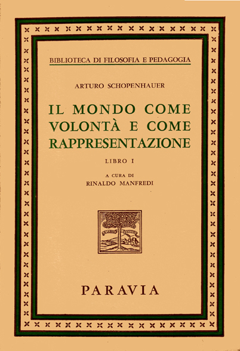

Filosofia
Suicidio Schophenauer

Schopenhauer rifiuta il suicidio perche':
non e' negazione della Volontà ma, al contrario, la sua stessa forte affermazione:
"il suicida vuole la vita ed e' solo malcontento delle condizioni che gli sono toccate";
il suicidio e' negazione di una sola manifestazione della Volontà, la quale, pur morendo
in un individuo, rinasce in mille altri.